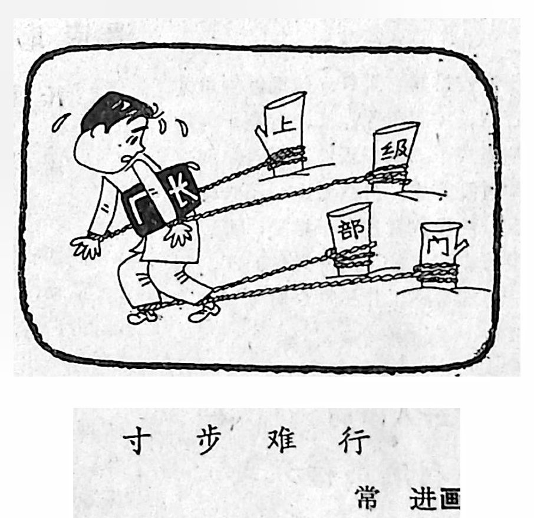

常进 《人事》1987年第2期（总第17期），第17页
寸步难行
Unable to Move an Inch
- Text in the drawing
- 厂长 / 上级部门
Factory director / Higher-level departments - Description
- A sweating factory director strains forward, tied hand and foot to four posts that together read “higher-level departments.”
- Note
- Expanding enterprise autonomy and freeing factory directors from interference by supervising bureaus was a central demand of the mid-1980s reforms.
- Artist
- Chang Jin 常进
- Published in
- 《人事》1987年第2期（总第17期）, p. 17
- Themes
- Reform and its implementation · Bureaucratism

Cite
Chang Jin, “寸步难行” [Unable to Move an Inch], Renshi (Personnel) 《人事》, 1987, no. 2, p. 17.